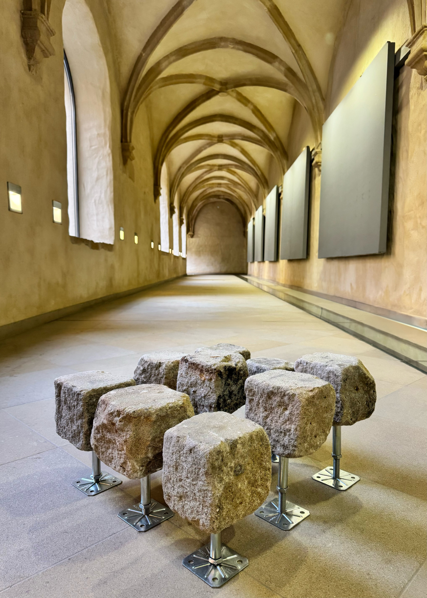
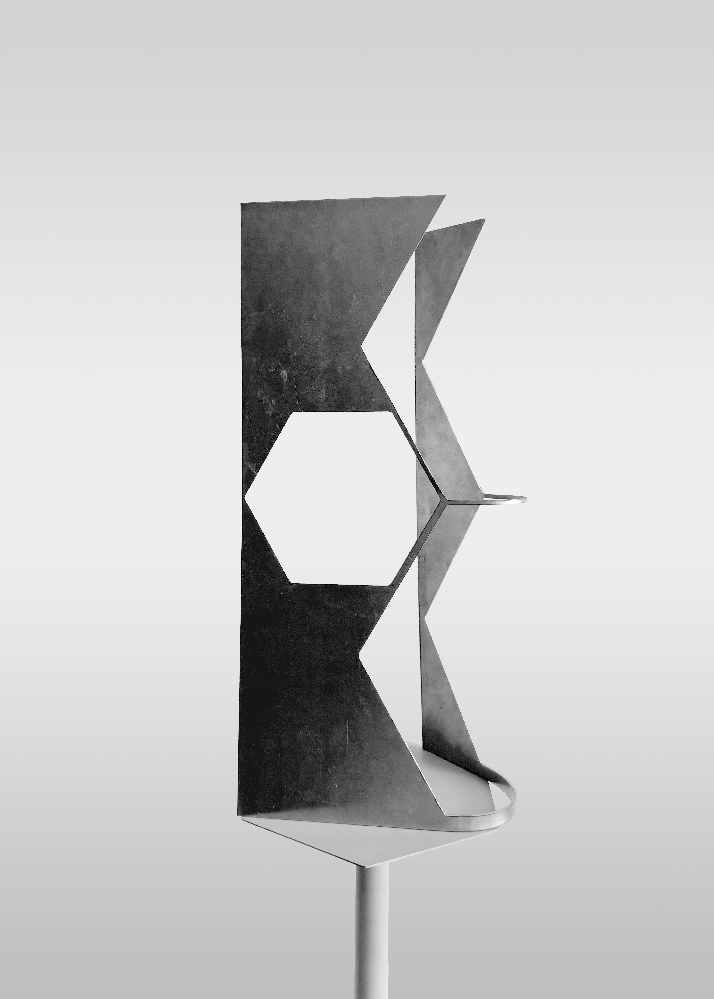
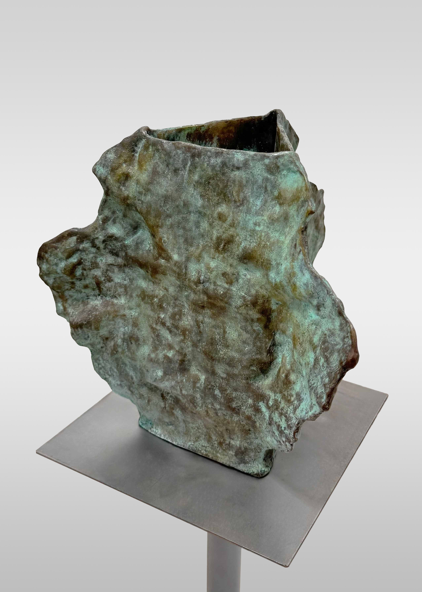
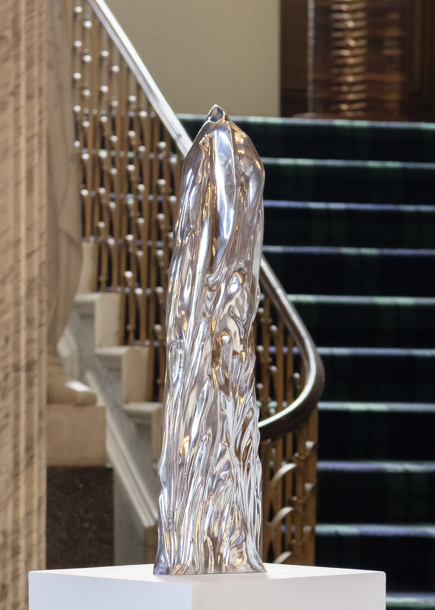
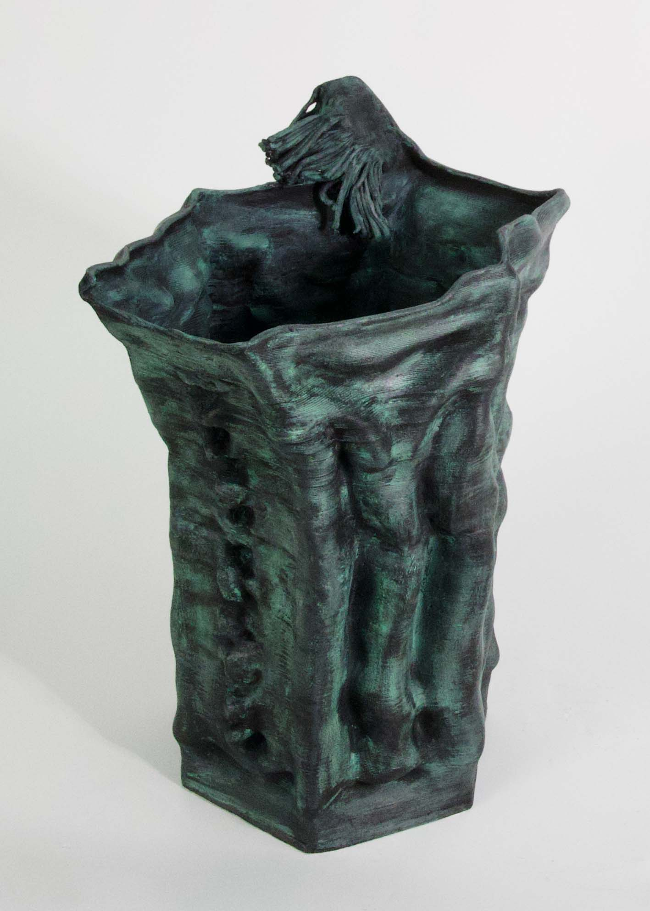
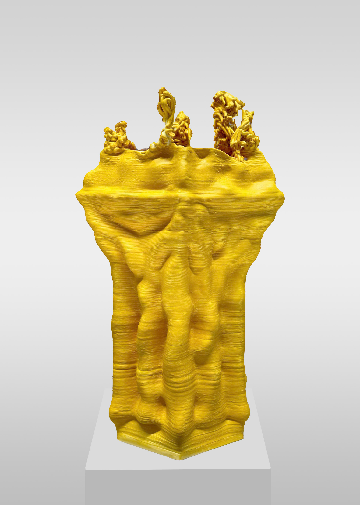
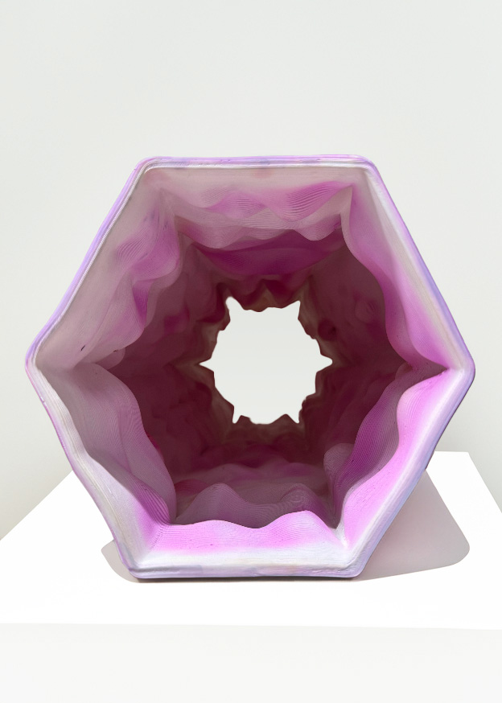
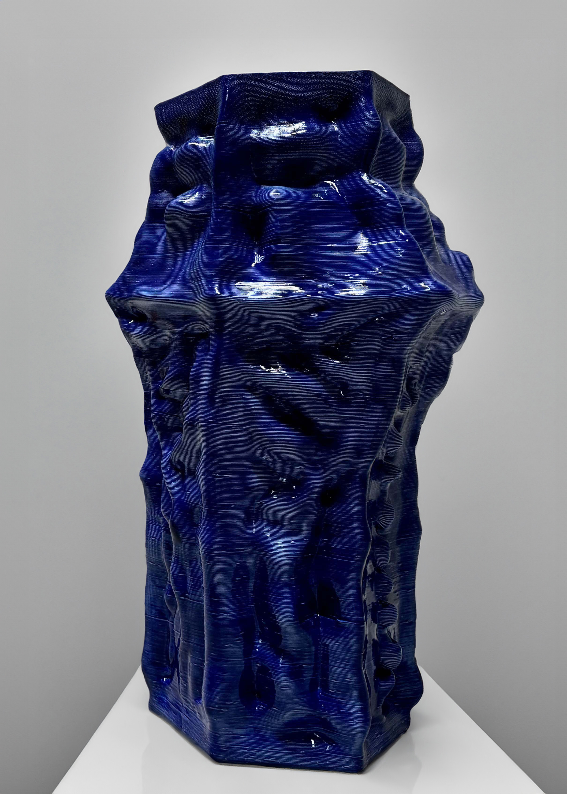
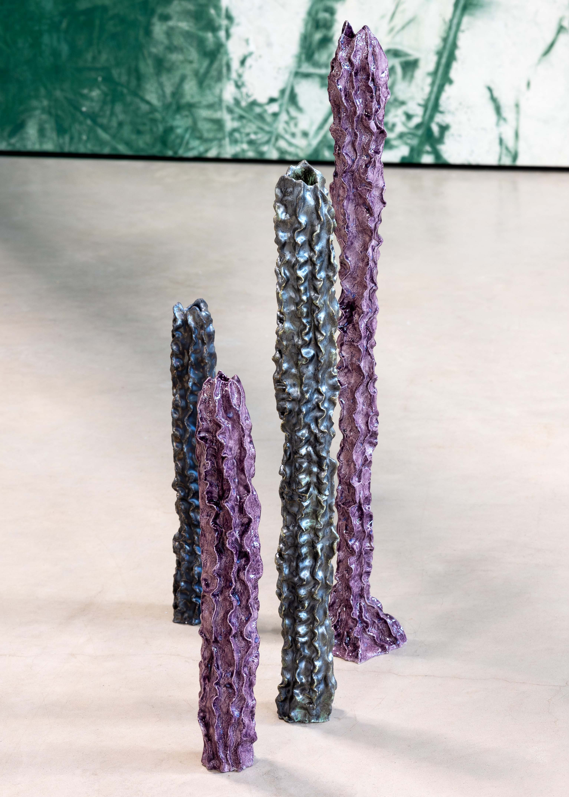
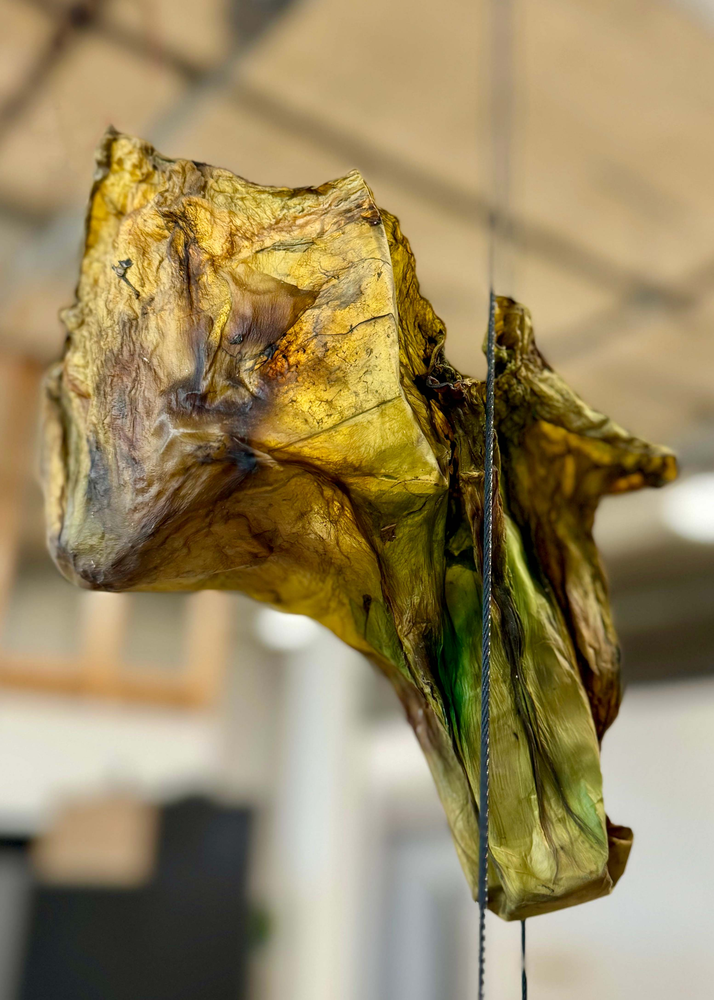

Sélection d’œuvres

Murmures fossiles
2025
Pierre de l’abbaye de Neumünster, métal, feuille de ficus lyrata
220 x 86 x 27 cm
Unique

Liminal
2025
Pavé de l’abbaye de Neumünster, métal
31 x 85 x 85 cm
Unique

Présences latentes
2025
Pierre de l’abbaye de Neumünster, tréteau, cresson, mousse, métal
130 x 120 x 200 cm
Unique

Rien ne se perd
2025
Pavé de l’abbaye de Neumünster, bitume de récupération, goudron de pin, feuille de ficus lyrata
39 x 14 x 13 cm
Unique

Pierre de lettré de Neumünster
2025
Pierre de l’abbaye de Neumünster, béton, racine et métal
52 x 26 x 20 cm
Unique

Rien ne se crée
2025
Pavé de l’abbaye de Neumünster, bitume de récupération, goudron de pin, feuille de ficus lyrata
23 x 37 x 15 cm
Unique
5.7.jpg)
Antidote (α)
2025
Acier et bois récupérés, huile
49 x 36 x 20 cm
Unique

Tri-Hex
2024
Acier récupéré
52 x 20 x 15 cm
Unique
5.7.jpg)
Antidote (σ)
2025
Acier récupéré, huile
40 x 21 x 12 cm
Unique

Genèse de l’acier III
2025
Huile sur toile
100 x 100 cm

Genèse de l’acier I
2025
Huile sur toile
100 x 100 cm

Genèse de l’acier II
2025
Huile sur toile
100 x 100 cm

Triton
2024
Bronze recyclé, fonte à la cire perdue
23 x 21 x 21 cm
Édition de 3 + 2 EA

Acanthus Ascendant (Ascension d’Acanthe), fonte au sable
2024
Aluminium anticorodal recyclé
60 x 17 x 13 cm
Unique

Scottish Fantasy
2024
Céramique montée au colombin assistée par ordinateur, émail, cire
43 x 30 x 24 cm
Unique

Euryale
2024
Céramique montée au colombin assistée par ordinateur, émail
44 x 25 x 20 cm
Unique

Tours Détourés
2024
Céramique montée au colombin assistée par ordinateur, encre
48 x 25 x 20 cm
Unique

Tours et Détours
2024
Céramique réalisée par enroulement assisté par ordinateur, glaçure
53 x 30 x 24 cm
Unique

Perspectives Patinées
2024
Acier recyclé, patine, charbon de bambou
75 x 45 x 45 cm
Unique

Spinal Bloom (Éclosion d’Échine)
2024
Faïence, glaçure
Dimensions variables, hauteur 10 - 60 cm
Unique

Fragile Beauty
2024
Bioplastique issu d’une culture de bactéries et de levures
23 x 12 x 16 cm
Unique